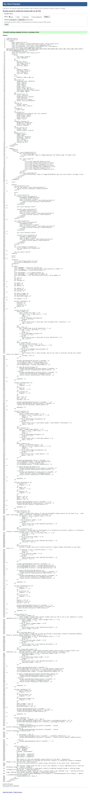
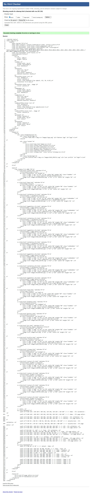

User Profile Page validation report
The error-free validation report confirms the document is structurally sound. Adherence to modern web standards ensures that all interactive elements, such as profile images and navigation links, remain accessible and render consistently across various browsers and devices.

Back to Page Editor page
Include a link back to the corresponding section of the Page Editor.
Sitemap Page validation report
A successful validation indicates high navigational integrity. Because the sitemap functions as a directory for both users and search engine crawlers, the absence of syntax errors ensures that every link and hierarchical structure is easily discoverable without technical bottlenecks.

Back to Page Editor page
Include a link back to the corresponding section of the Page Editor.
Content Page validation report
The report reflects a high level of technical precision despite the complexity of the page. Maintaining error-free code while managing multiple media elements, figures with captions, and nested navigation menus demonstrates strict compliance with HTML5 semantic standards.

Back to Page Editor page
Include a link back to the corresponding section of the Page Editor.